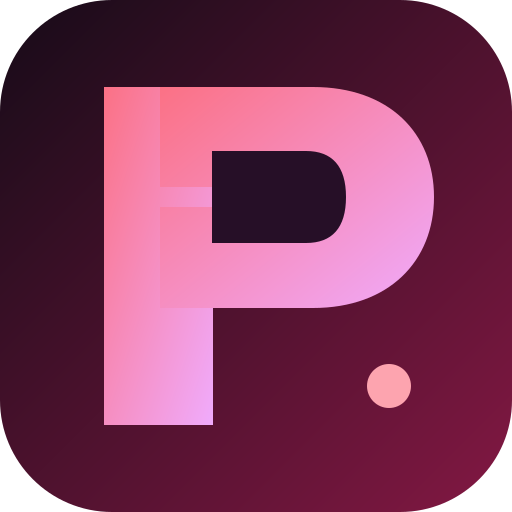

PentAGI
Upstream app and security-tool services

LOCAL AI • DESKTOP QUICK START
PentAGI + llama.cpp, set up and managed from one app.
Install Docker once and keep it running. This desktop app downloads the pinned PentAGI source and verified model files, configures the database and local AI services, runs startup checks, and opens PentAGI when ready.
Install Docker Desktop (Windows/macOS) or Docker Engine (Linux), open it, and confirm it is running. Set Docker to start with your computer so your workspace is ready whenever you open this app.
Upstream app and security-tool services
G9v3 GGUF served by llama.cpp
Nomic embeddings with pgvector
REUSABLE ISOLATED WORKER IMAGES
Checking this computer's available resources...
Upstream documents 200+ CLI tools. Examples include Nmap, Masscan, Amass, Subfinder, Nuclei, SQLmap, Gobuster, FFUF, Nikto, Hydra, John, Hashcat, Metasploit, Impacket, NetExec, TShark, tcpdump, mitmproxy, Binwalk, and Radare2. .
PentAGI worker containers can use Docker's normal outbound networking; Docker isolation does not mean they are offline. Worker images stay in Docker and are reused; tools are not installed into your host OS. USB devices are not automatically passed through. Only run PentAGI against systems you own or are authorized to test.
First setup downloads the verified local models and Docker images (several gigabytes). Your selected worker is installed in Docker. Keep this app open until setup and checks finish.
Welcome. Select “Set up & start” to prepare your local workspace.